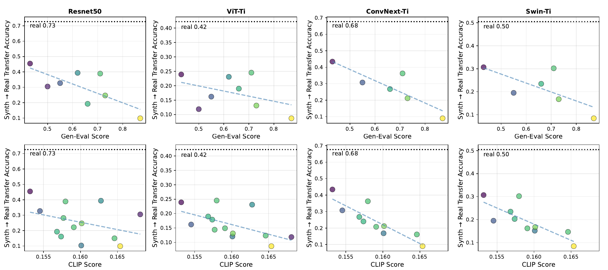
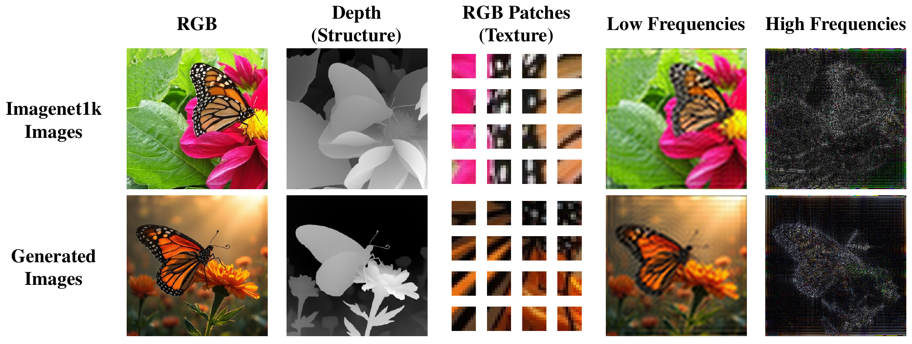
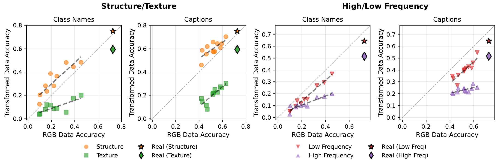
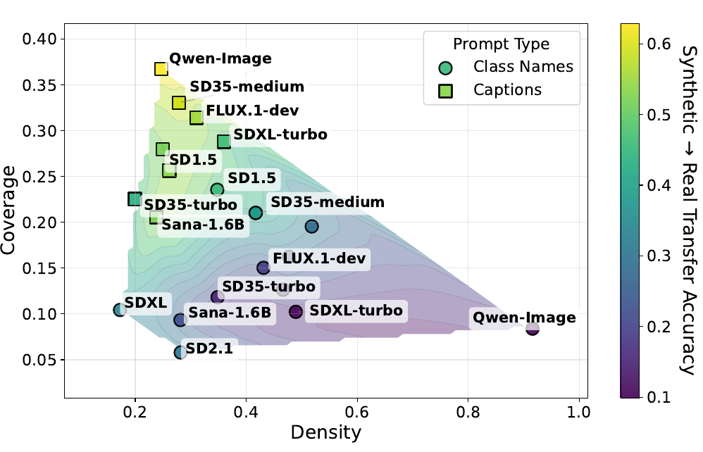
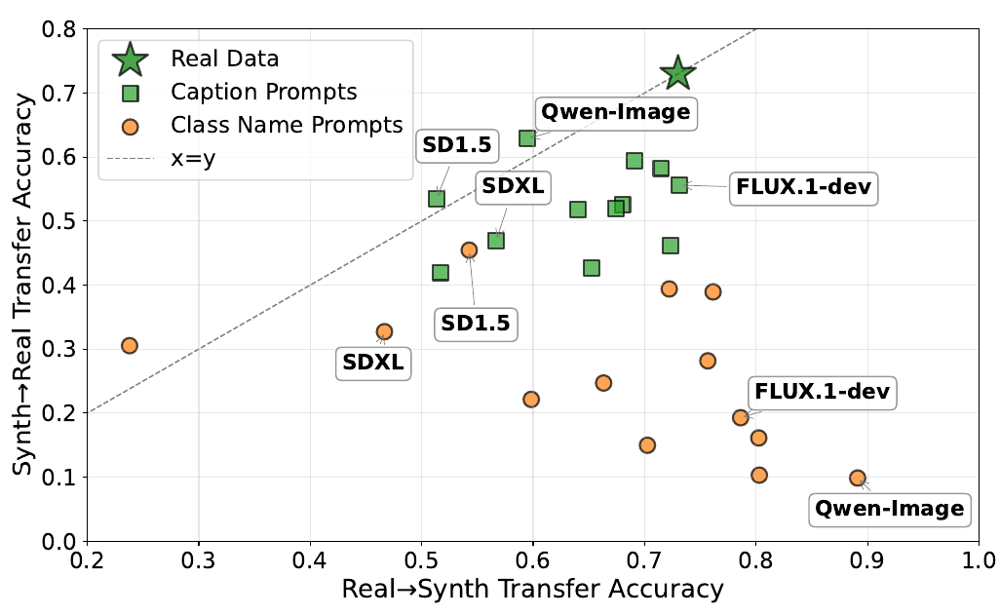
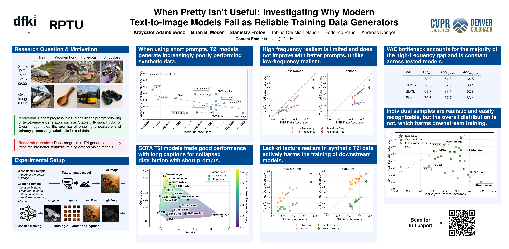

Abstract
Recent text-to-image (T2I) diffusion models produce visually stunning images and demonstrate excellent prompt following. But do they perform well as synthetic vision data generators? In this work, we revisit the promise of synthetic data as a scalable substitute for real training sets and uncover a surprising performance regression. We generate large-scale synthetic datasets using state-of-the-art T2I models released between 2022 and 2025, train standard classifiers solely on this synthetic data, and evaluate them on real test data. Despite observable advances in visual fidelity and prompt adherence, classification accuracy on real test data consistently declines with newer T2I models as training data generators. Our analysis reveals a hidden trend: these models collapse to a narrow, aesthetic-centric distribution that undermines diversity and real data distribution coverage. Overall, our findings challenge a growing assumption in vision research, namely that progress in generative realism implies progress in data realism. We thus highlight an urgent need to rethink the capabilities of modern T2I models as reliable training data generators.
Key Findings
Progress in prompt following does not translate into better training data
Newer T2I models score higher on text-alignment metrics such as GenEval and CLIPScore — yet, for class-name prompts, this alignment is inversely related to how useful their images are as training data. Across four classifier architectures (ResNet-50, ViT-Ti, ConvNeXt-Ti, Swin-Ti), higher benchmark scores correspond to lower Synth → Real transfer accuracy. This reveals a hidden trade-off between prompt following and a model's performance on short prompts.

Accuracy on real ImageNet-1k vs. GenEval (top) and CLIPScore (bottom). Higher text-image alignment correlates with worse transfer performance for class-name prompts.
Structure is preserved, but texture and high-frequency detail are degraded
To isolate which aspects of synthetic images break, we transform the training and test data to suppress or amplify specific cues: depth maps (structure only), local 9×9 patches via BagNet (texture only), and low-/high-pass filtering (frequency bands).

Probing transforms. We transform our problem into different domains to localize the synthetic-vs-real gap. We use depth estimation to remove anything but geometry, a patch classifier to remove long-range dependencies, and high/low-pass filtering to probe different frequency bands.
The result is consistent: global structure and low frequencies are faithfully reproduced, while texture and high-frequency detail are systematically degraded. Crucially, detailed captions improve structure and low-frequency content, but barely help texture or high-frequency realism, which remain largely decoupled from the text prompt.

Structure/texture (left) and high/low-frequency (right) transfer. Structure points sit above the diagonal (unrealistic textures hurt transfer to real data)
Modern models collapse to narrow, high-density, low-coverage distributions
Using density and coverage metrics, we find that as density decreases and coverage increases, transfer accuracy to real data improves. Many poorly performing models exhibit high density but low coverage — samples are visually consistent yet distributionally narrow. Detailed captions derived from real data substantially increase coverage and reduce density, recovering much of the lost diversity. However it is worth noting that this represents a best case scenario (captions from real data) and a considerable effort needs to be put into generating such captions without ground truth images.

Diversity via density & coverage. Compact, high-density clusters yield high sample quality but sacrifice the diversity needed for generalization.
Samples look real, but the distribution doesn't
Comparing cross-domain transfer shows a strong asymmetry: real-trained classifiers handle synthetic images well (high Real → Synth), but synthetic-trained classifiers transfer poorly to real data (low Synth → Real). In other words, modern T2I models prioritize sample realism over distributional realism: individual images are easy to recognize, yet the overall dataset fails to capture the variation and decision boundaries of real data. Detailed captions partially reduce this asymmetry.

Cross-domain transfer (ResNet-50). Synthetic data is increasingly easy for real-trained models to classify, yet trains progressively worse models — this reveals that modern models posses high sample realism but lack distribution realism.
Takeaway
Modern T2I models generate data that looks aesthetically better but functions worse as reliable training data. We advocate for three practical shifts: (1) train for diversity and natural image statistics, not only photorealism; (2) report utility alongside perceptual quality (density-coverage, Synth → Real transfer, frequency-band results); and (3) design prompts and distillation pipelines that preserve intra-class variation and fine detail.
Poster

BibTeX
@inproceedings{adamkiewicz2026pretty,
title={When Pretty Isn't Useful: Investigating Why Modern Text-to-Image Models Fail as Reliable Training Data Generators},
author={Adamkiewicz, Krzysztof and Moser, Brian B and Frolov, Stanislav and Nauen, Tobias Christian and Raue, Federico and Dengel, Andreas},
booktitle={Proceedings of the IEEE/CVF Conference on Computer Vision and Pattern Recognition},
pages={36660--36669},
year={2026}
}